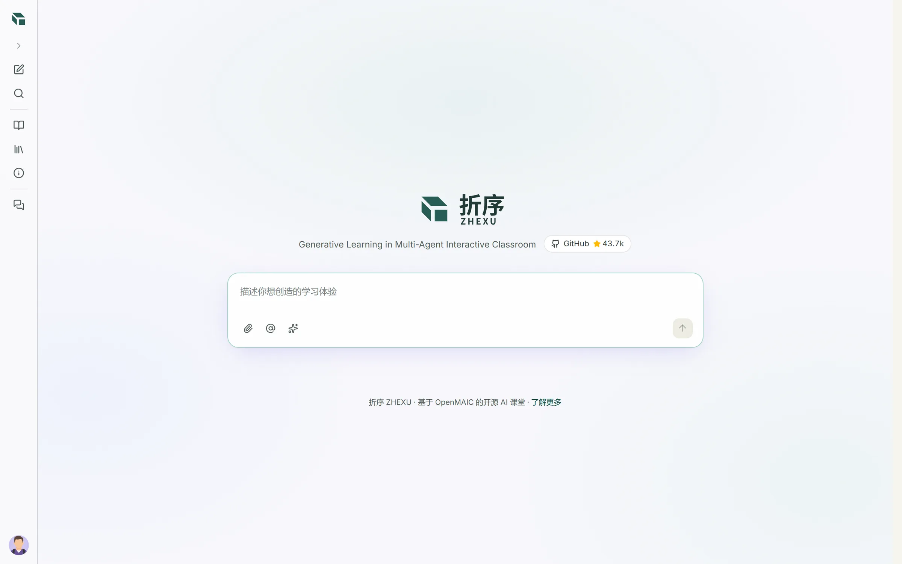
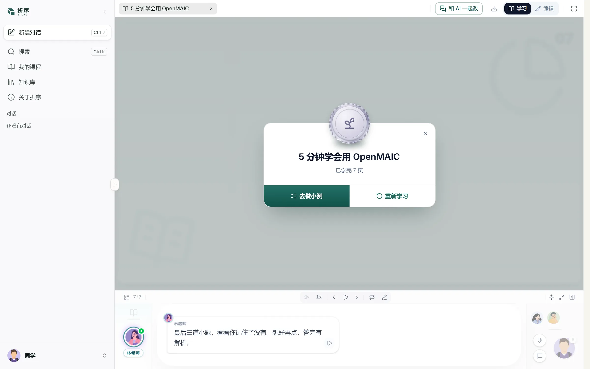
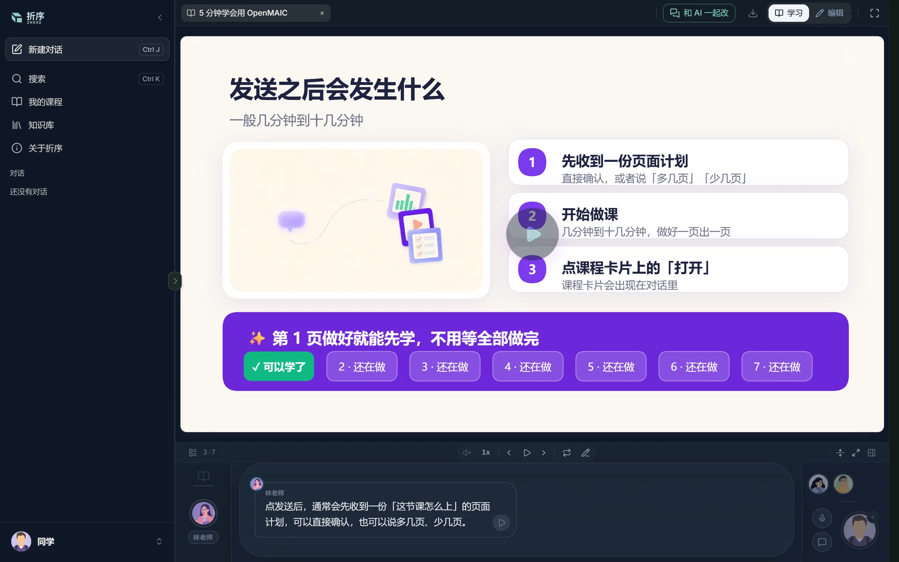

一句话， 展开成一堂课。
折序是开源的 AI 互动课堂。说出想学什么，它先排好提纲，再做出课件，然后由 AI 老师讲解、AI 同学陪你讨论。
MIT 许可，基于 OpenMAIC 构建。
-
一句话
讲讲光合作用，面向初二学生
-
提纲
- 叶子为什么是绿的
- 光反应：把光变成能量
- 暗反应：把能量存成糖
- 随堂测验
-
讲解
光反应
叶绿体里的类囊体膜吸收光，把水分解，放出氧气。
-
白板
6CO2 + 6H2O
→ C6H12O6 + 6O2
老师一边讲，一边把式子写在白板上。
-
测验
光反应发生在叶绿体的哪里？
-
讨论
老师：为什么秋天叶子会变黄？
同学：是不是叶绿素变少了？
你也可以插话…
这是真实的界面
下面的画面截自本地运行的折序，课程是内置的入门课。



一堂课里有什么
课上
- AI 老师讲解
- 一页一页讲，边讲边在白板上写公式、画图，也会读出来。
- AI 同学讨论
- 同学会提问、争论，你可以随时插话。
- 向老师提问
- 打字或者用麦克风问，老师用课件或白板回答。
课件
- 四种页面
- 幻灯片、测验、可以动手的互动实验，还有项目制学习。
备课
- 从一句话开始
- 写下主题，或者附上 PDF 等资料，几分钟后得到一堂课。
- 边聊边改
- 在对话里说“把第 2 页讲得更简单”，AI 帮你改；也可以直接编辑页面。
- 知识库和联网检索
- 让课程参考你的资料库，或者上网查最新的信息。
带走
- 导出
- 可编辑的 PPTX、能离线播放的单个 HTML 文件，或整堂课的 ZIP 包。
部署
- 自己托管
- Node.js 加 PostgreSQL，或者用 Docker。
- 模型自选
- OpenAI、Anthropic、Gemini、DeepSeek、通义千问、Ollama 等，密钥留在你的服务器上。
- 12 种界面语言
- 简体中文、繁体中文、英语、日语、韩语等。
站在 OpenMAIC 之上
折序基于 THU-MAIC 团队开源的 OpenMAIC（MIT 许可）。课堂、课件和导出这些能力来自上游；折序在上面加自己的品牌、主题和扩展，通用的改进会提交回上游。
已经有
- 课堂能力
- 上游 OpenMAIC 的全部功能。
- 品牌和主题
- 折序的标识、配色和深色模式。
- 扩展层
- 加功能时不改上游的核心代码，方便跟着上游升级。
- A4 讲义
- 助手把回答交付成 A4 的 PDF 和页面图片，可选手写体。默认关闭。
- 课程讲义
- 把保存好的一门课导出成 A4 讲义或练习，内容原样取自课程。和 A4 讲义共用开关。
- 图片标注
- 助手在你附上的图片上加带编号的标注，导出 PNG 和 PDF，原图不改动。默认关闭。
- 我的文件
- 一个页面，集中列出助手在各个对话里交付的讲义和标注图。
- 公式排版
- 讲义和课程里的 LaTeX 公式排成正常的数学式，排法和字体与课件上相同。
- 表格
- 讲义和课程里的表格画成带线的表格，表头有底色，合并单元格画成一格，跨页重复表头。
- 图片
- 课程里的图片放进讲义，只从课程素材里读取，不会去外网取图。
- 互动页和项目页
- 互动页取出组件自带的说明和步骤，项目页取出目标、阶段和任务。
计划中
- 新版项目页
- 新格式的项目页放在单独的包里，目前在讲义里只有标题，计划也取出其中的文字。
在自己的电脑上运行
需要 Node.js 22.19 以上、pnpm 10 和 PostgreSQL 16。
-
取得源码
git clone <仓库地址> zhexu cd zhexu pnpm install仓库公开后，这里会换成实际地址。
-
配置
cp .env.example .env.local cp openmaic.example.yml openmaic.yml在 .env.local 里填模型密钥和数据库地址，再加上这三行：
NEXT_PUBLIC_DEPLOYMENT_EXTENSION=zhexu NEXT_PUBLIC_WORKBENCH_ENABLED=true OPENMAIC_AGENT_RUNTIME_ENABLED=true -
启动
pnpm db:up pnpm devpnpm db:up 用 Docker 起一个开发数据库，已有 PostgreSQL 可以跳过。然后打开 http://localhost:3000。